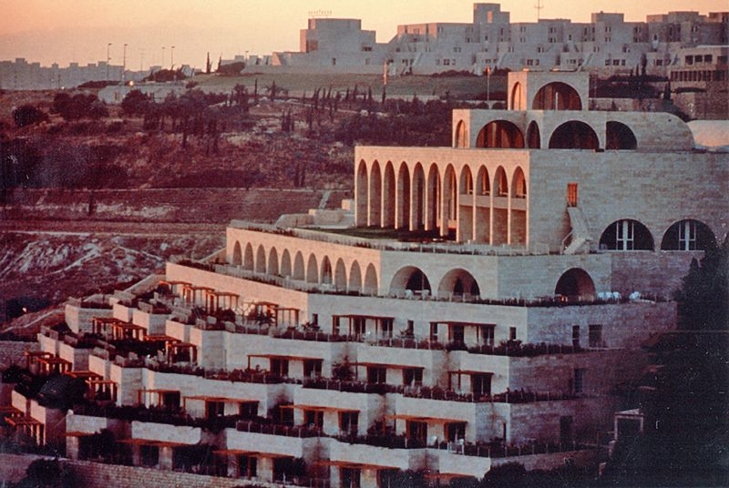
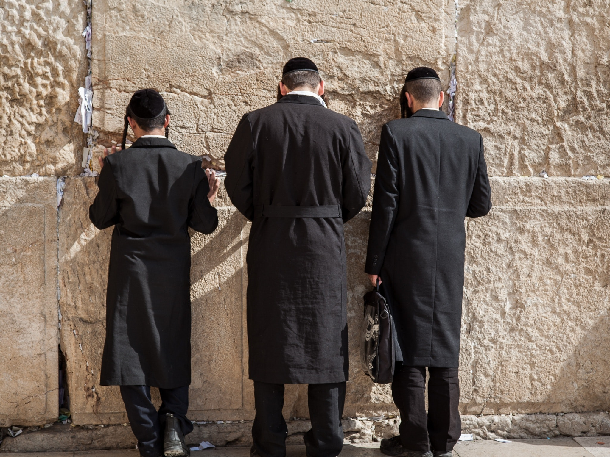

For a semester of my sophomore year, I was fortunate enough to attend a study abroad to Israel-Palestine on the BYU Jerusalem Center campus. During my study abroad, I learned about the diverse cultures and religions inhabiting the land, and experienced some incredibly spiritual moments.
When I first hopped off the plane in Israel, it felt unreal! I had spent months working and preparing for the move to Israel, and I had made it! We hopped on the buses at 5:00pm Israel time, and drove to the BYU Jerusalem center from the Tel Aviv Airport. The sun was setting, and I got my first view of the Dome of the Rock and the beautiful Jerusalem Center Campus (which looks over the Kidron Valley and the Old City of Jerusalem). After a quick dinner prepared by local Israeli and Palestinean chefs, we got a tour of the campus and were sent to our rooms to unpack and go to bed. As I was unpacking, the Islamic Call to Prayer began and I got to hear the prayer echo from the green minnerets all throughout the valley from my porch for the first time.
 The BYU Jersalem CenterDuring this study abroad, we took a variety of classes. We took Islam and Palestine from Bashir Bashir, a local secular Palestinean. He is a very talented lecturer and it was interesting to hear about all the work he was doing to help Palestineans. I also loved his curiosity about our religion, and was sad that because of certian laws and agreements, we were not allowed to share our beliefs. Israel and Judaism was taught by Ophir Yarden, a local orthodox Jew. His classes were always fascinating and you could tell how much he loved his religion and cared for both the well being of Jews and Palestineans. Near Eastern Studies was taught by Brother Seely, a legendary archeologist who worked on the dead sea scrolls and is an expert in his field. He was also one of the most humble people and his love for archeology showed (he also had hilarious stories about how he would touch artifacts in museums with his kids). Old Testament was taught by Brother Properzi. I loved learning about the Old Testament, and Properzi was one of the kindest professors I've ever met. Brother Judd taught the New Testament class. He shared his testimony in many lessons, and I loved hearing about his struggles in his field feeling less competent because I could relate! Ayman, a local Palestinean, taught our Arabic class. He was so much fun, and though we did not learn much Arabic, we learned a lot about Arab culture and got picked on a lot. Shoutout to Brother Huntsman for all of his work as the Academic Director, as well as Mr. Hayet as the Executive Director and Alawi Assistant Director.
Aside from taking the most incredible classes, we went on amazing and educational field trips, were alloted free time to explore Jerusalem on our own (well, in groups of at least 3), attended church with the most beautiful view over the Old City, did service projects in the garage, and made so many friends!
Highlights
One of my favorite things to do while I was in Israel was attend religious services. On Friday nights, I attended synagogue. I loved going to the Belz Great Synagogue with a couple friends one stormy night on Shabbat. This synagogue is for Hasidic Jews, and we had to walk through the ultra orthodox area of Mea Sherim to get there. The chanting and singing was incredible, and watching the men with their furry hats and robes rock back and forth on their feet as they sang the prayers was so spiritual. Another synagogue I attended was in a group of students with Professor Yarden. We were taxied to his house where we picked him and his sons up for synagogue. He gave us prayer books and we sang with him at his synagogue. After the service, he walked home with his sons and we drove back to campus. That was one things I loved to see. On Shabbat, families would be out and about with friends and families spending time together and disconnected from technology and worldly worries. After Shabbat services, families would be walking the streets after the sunset celebrating. It was beautiful! The Great Synagogue for Rosh Hashana was an awesome experiencec! Loved hearing the blowing of the Shofar. Other cool synagogues were the Yurva Synagogue (beatiful!), a Sephardic Jewish Synagogue, and an Italian Synagogue!
Not only did I attend Jewish services, but I attended lots of Christian services, including mass on Sundays! I went to Latin Mass at the church of the Holy Sepulchre while the Egyptian Coptic mass was going on at the same time. The chanting was hypnotizing and the way religions interact with each other in that the Church of the Holy Sepulchre was fascinating to learn about. Also attended some Orthodox services, as well as a small Italian mass inside the edicule of the Church of the Holy Sepulchre where a priest drew a cross on my forehead because I could not take communion. Our LDS church services were held in the Jerusalem Center on Saturdays (because that is the Jewish sabbath and everything is closed on Saturdays). We could see the Kidron Valley and the Old City from the auditorium where we held church. It was an amazing experience to be able to listen to talks about Christ and prophets and be able to actually see where those events happened while we listened.
Though I never went to a mosque during call to prayer, we did tour mosques and I loved all of the geometric artwork! Mosques are so beautiful, and the call to prayer each night and living in a Palestinean neighborhood gave me a taste of their culture and religion.
 The Old City of Jerusalem
The Old City of Jerusalem
Another one of my favorite things to do was visit the Western Wall, esspecially on Friday nights. On Friday nights, Jews from Jerusalem and all over the world would gather to celebrate, dance, worship, cry, and pray at the wall. The wall is an incredible symbol of the struggles Jews throughout the world have gone through, and it was amazing to partake in some of their culture and history.
Regarding the conflict between Palestineans and Israelis, it was very interesting to have professors from both sides of the spectrum, an Israeli director and Palestinean Assisstant Director, and be around staff that were both Israeli and Palestinean. The area of Israel is an area of significance to both Jews and Muslims (and even Christians!) and it was incredibly interesting to hear both sides of the story and to understand the complexity of the issues.
I hope that by the time they leave here they are actually more confused than when they just arrived. This would mean that they understand the complexity of the situation. - Eran Hayat, Executive Director of the Jerusalem Center
On one of our fieldtrips, we took a week long trip and stayed on a kibbutz in the Galilee area. A kibbutz is a socialist Jewish community, and we got to stay in the rooms that they offer to guests, which is one of their forms of income. They also have a banana farm, cows, and other stores that they run. The Galilee area was very special. We followed the path of Christ's ministry, including a visit to Capernaum, Peter's house, and a synagogue Jesus likely taught at. According to brother Seely, Peter may have actually lived in the place we visited (many places claim to be the historical location but are often innacurate). The Galilee area was so beautiful and green compared to most of Israel. It was so peaceful and I was so lucky to be learning about the New Testament while walking in Christ's footsteps.
Culture Shocks
One of the first things I noticed coming into Israel was the tight security. On the plane trip into Israel, we had to go through security when we got on our plane in the US to Paris, then through security again right before the gate on our plane from Paris to Israel. When we arrived at the airport in Tel Aviv, we were questioned. A couple of the Jerusalem students were pulled into separate rooms and were interrogated for a couple hours, so we had to wait at the airport until they were released. Another crazy thing about Israel is how soldiers are everywhere. Every youth in Israel serves in the military for two years. It was crazy seeing people my age carrying guns monitoring the Old City and other areas.
 The Western WallAnother thing about the culture that was unique to me was the sheer amount of religion around me. Growing up in San Francisco, I was not used to be surrounded by religious people and most of my friends were atheist. Religion was such a big deal in Jerusalem, that on the Jewish sabbath, everything would shut down in the orthodox areas (even the stoplights would be shut off!).
I really appreciated how the Jerusalem Center allowed us to dive into the culture. As members of the LDS church, we even gave up some of our traditions to fit into the area we were living in by having our church on Saturday. Although the church has shifted away from being called "Mormons", we were told to refer to ourselves as Mormons when in Israel, and the street names and maps all said "Mormon University". In the area we were in, everyone knows who the "Mormons" are. Shopkeepers recognized us and would yell out "Mormonis!" when we passed by. Though we could not teach about the church, we were definently representatives of the church as we travelled, and the locals recognized us. It created a desire in me to behave well so as to keep up the reputation of the Jerusalem Center.